| 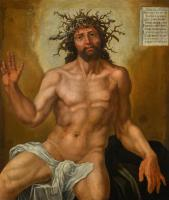 | Man of Sorrows
1525
|
| Rest on the Flight into Egypt
1530
| |
| The Fall
1530
| |
| 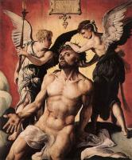 | Man of Sorrows
1532
|
| 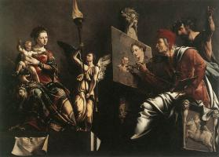 | St Luke Painting the Virgin and Child
1532
|
| 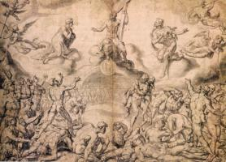 | Last Judgment
1537
|
| 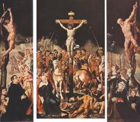 | Crucifixion (Triptych)
1538-42
|
| 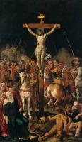 | Crucifixion
1538-42
|
 | Lamentation of Christ
1540-43
|
| 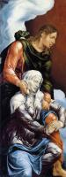 | The Virgin and Saint John the Evangelist
1540
|
| 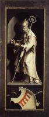 | Bishop Saint
1540
|
| 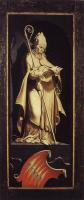 | Bishop Saint
1540
|
 | The Crucifixion
1543
|
| 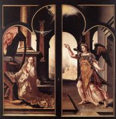 | Annunciation
1546
|
| 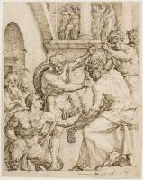 | Christ Being Crowned with Thorns
1548
|
| 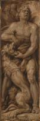 | Samson Rending the Lion
1550-60
|
| St Luke Painting the Virgin
1550-53
| |
| 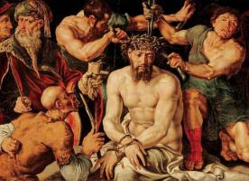 | Christ Mocked and Crowned with Thorns
1550-55
|
| prophets Isaiah and Jeremiah
1559-60
| |
| 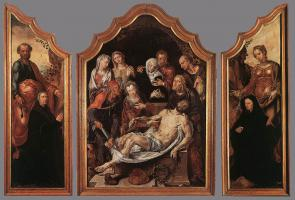 | Triptych of the Entombment
1559-60
|
| 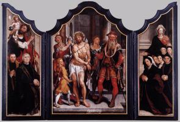 | Ecce Homo Triptych
1559-60
|
| 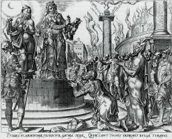 | Judith Showing the Head of Holofernes
1564
|
| 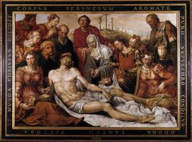 | Lamentation on the Dead Christ
1566
|
| 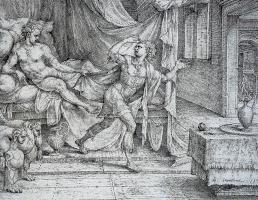 | Joseph and Potiphar's Wife
1566
|
| 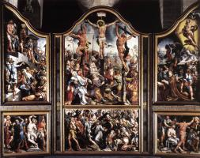 | Triptych
|